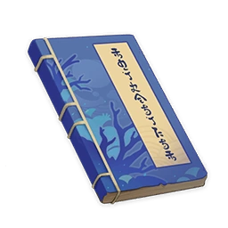

Inazuma · Books & Literature
A Preliminary Study of Sangonomiya Folk Belief
A paper by Sumeru modern-history scholar Shihab Purbiruni that compares Watatsumi’s accepted story of Orobashi with competing records and the political force of collective memory.

Overview and author
A Preliminary Study of Sangonomiya Folk Belief is a scholarly paper by Shihab Purbiruni, a Sumeru scholar of modern history. The item says it was written two years before the Inazuma civil war and can be found in Bourou Village on Watatsumi Island.
Purbiruni studies how Watatsumi and Narukami remember Orobashi’s arrival and death. The paper is especially useful because it separates a widely accepted folk history from the author’s own theory and from an alternate account associated with Enkanomiya.
The accepted story of Orobashi and Watatsumi
The paper begins with the version accepted by many people on both Narukami and Watatsumi. Near the end of the Archon War, Orobashi breaks coral from its body to guide the people of the deep sea into the light and gather them on a coral island. The people are grateful, but the island’s beauty cannot solve the practical problem of famine.
When Orobashi asks why the people suffer, the shrine maiden answers simply: hunger. The elders ask permission to settle the larger, more fertile islands to the east. Orobashi initially stays silent, aware that Narukami is powerful and that defeated gods in the divine order are killed. Only after years of renewed requests does Orobashi train the people to become warriors and lead an invasion of the Electro Archon’s lands.
The invasion and the sacrifice hypothesis
The account says that the Watatsumi people did not know Orobashi expected defeat. It describes the campaign as an act of sacrifice rather than an attempt to conquer Narukami, and refers to inscriptions hidden by a shrine maiden that foretold the expedition’s failure and Watatsumi’s humiliation.
Purbiruni stresses that Orobashi’s motives are poorly recorded. The paper’s central explanation is a later hypothesis: by accepting a certain death, Orobashi may have created a shared history strong enough to hold the people together after losing their god. This is the author’s interpretation of the evidence, not a confirmed account of the serpent’s private intentions.
Collective memory and present-day Watatsumi
Purbiruni argues that memories of rescue, prosperity, hunger, and loss have become part of Watatsumi’s collective identity. Even people who no longer expect Orobashi to return may still feel pride in the island, pain over the treatment of the serpent’s remains, and grief passed down through generations. The author describes these shared emotions as a source of endurance and resistance.
The paper also warns that inherited resentment can be used by people with political aims, especially during hardship. Writing shortly before the civil war, Purbiruni points to economic exploitation by the Kanjou Commission and to young people discussing resistance. This section reflects the author’s contemporary analysis; it is not a neutral prediction that all Watatsumi people think alike.
The alternate Enkanomiyan account
The paper preserves another version of Orobashi’s story. It says the people of the deep sea kept detailed chronicles because the lack of day and night made time difficult to track; Orobashi ordered those records sealed in Enkanomiya. Their names also changed when the people adopted Narukami customs after reaching the surface.
This version says Orobashi had fled into the Dark Sea to avoid the Archon War and therefore may have committed a grave sin. The author speculates that the heavens could have ordered Orobashi to bring the people out and then die, but immediately says this cannot be known for sure. Purbiruni fears that the sealed books and the limited number of people able to read the old script may keep the truth inaccessible.
How the paper treats history
Purbiruni’s argument distinguishes recorded fact from a community’s accumulated consciousness. Because Watatsumi has limited surviving written history, later generations can attach different meanings to the same story. The author sees shared memory as both a resource for solidarity and a vulnerability that can be exploited.
That is the paper’s thesis, not a final verdict on Watatsumi culture. Readers can compare it with The Moon-Bathed Deep, which presents the island’s traditions and the role those traditions play in protecting its home, and with Enkanomiya’s surviving records, including Before Sun and Moon.
Location and reading notes
The quest item is found in Bourou Village on Watatsumi Island. The cover uses the Inazuman script for the words "FOLKBELIEF," matching the paper’s subject.
Keep the levels of certainty separate: the first narrative is presented as widely accepted folk history; the account of hidden inscriptions and a planned sacrifice is reported as legend; the explanation of Orobashi’s motive is Purbiruni’s hypothesis; and the alternate Enkanomiyan story also ends with an explicit statement that its conclusion is uncertain.
This is an original CoreGG reading guide, not an official HoYoverse article or a reproduction of the game text. Source links below identify the records used so you can check the original context.
Sources & references
Check these sources for the original game text and reference trail.